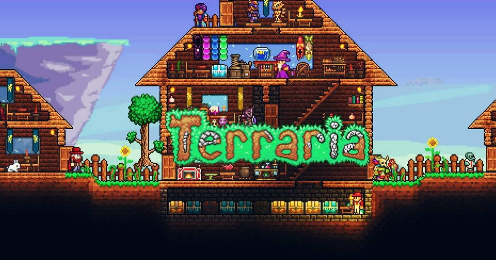

Terraria

Terraria es un videojuego de mundo abierto en 2D. Contiene elementos de construcción, exploración, aventura y combate, muy similar a juegos clásicos de la consola Super NES, como por ejemplo la serie Metroid, y a otras entregas más recientes como Minecraft. El juego comienza en un mundo creado de forma aleatoria.